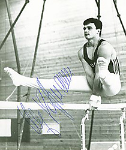

Ulf Hoffmann (GDR)
1985 European PB Bronze Medalist
1985 Cottbus AA Champion

Medal Total
Olympic Games: 1
Silver
World Championships: 2 Bronze
European Championships: 1 Bronze
Ulf was born on September 8, 1961.
Competition Results
1979
Jr. GDR-HUN Dual Meet: 2nd AA, 4th HB, 5th PB, 6th PH, 6th HB
1980
GDR Championships: 8th AA
International Championships of Romania: 17th AA
Moncada Cup: 2nd AA
Police Spartakide: 4th AA
1981
American Cup: 5th AA
Cottbus International: 7th AA, 3rd PH
FRA-GDR Dual Meet: 1st Team, 4th AA
GDR Championships: 5th AA
1982
Cottbus International: 5th AA
Ennia Gold Cup: 1st AA, 1st HB, 2nd PB, 4th FX, 4th R, 4th V, 5th PH
GDR Championships: 1st HB
GDR Team Championships: 2nd AA
GDR-USSR-SUI Tri-Meet: 3rd AA
World Cup: 15th AA
1983
Cottbus International: 3rd AA, 2nd R
World Championships: 5th Team, 12th AA
1984
CSSR Spartakiade (Olomouc): 2nd Team, 4th AA, 5th PB, 8th PH, 8th HB
DTB Cup: 2nd AA, 1st FX, 1st PB, 2nd V, 3rd R
GDR City Meet: 3rd AA
GDR-SUI Dual Meet: 1st Team, 7th AA
Riga International: 1st PB, 7th V, 8th PH
1985
Cottbus International: 1st AA, 1st FX, 1st PB, 1st HB, 4th V
Dynamo Championships: 1st AA
European Championships: 5th AA, 3rd PB, 6th HB, 7th FX, 7th V
GDR Championships: 1st FX, 3rd R, 6th V
Riga International: 17th AA, 3rd V
World Championships: 3rd Team, 10th AA, 7th PB, 8th FX
1986
American Cup: 5th AA
FRA-GDR Dual Meet: 1st Team, 3rd AA
GDR Championships: 3rd AA, 2nd FX, 4th R, 4th HB
Goodwill Games: 6th FX, 6th R, 8th V
Intl. Mixed Pairs: 3rd Team
1987
Belgian Gym Masters: 2nd AA, 1st HB, 3rd R, 3rd PB
Cottbus International: 2nd AA
World Championships: 3rd Team, 17th AA (prelims)
1988
Champions All: 2nd AA
French International: 3rd AA, 3rd PH
GDR Championships: 6th AA
Olympic Games: 2nd Team, 29th AA (prelims)
This page was created on June 25,
2005.
©Gymn Forum